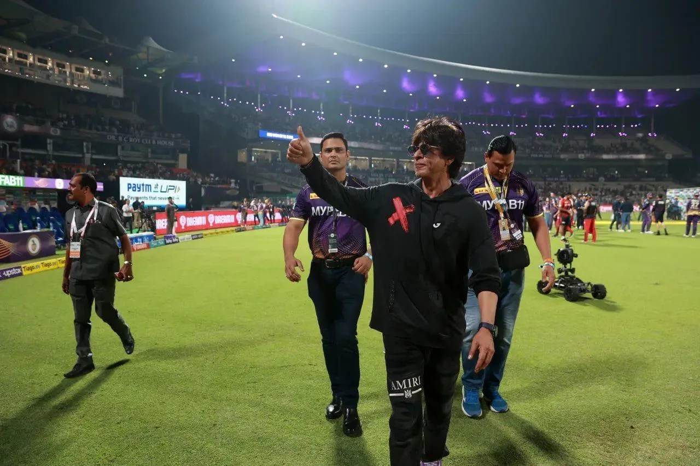

The Final Thesis · section 54 of 92
ASOKA TO BOODA
BE DA BOO-DA.



6
Remember the story of the emperor who gave up conquest?
Forget it.
This time, the King isn't giving up the kingdom.
He's going ALL IN.
The movie KING. The endorsements. The Hurun wealth estimate. Knight Riders and the Los Angeles stadium project. The investment in FLAM, an AI-powered interactive-content company.
Different businesses. Different investments. No evidence that they are all part of one secret master plan.
But put the cards on the table.
Cinema.
Advertising.
Cricket.
Global business.
Technology.
A worldwide fan base.
And suddenly, the old story of renunciation becomes a very different kind of satire.
ASOKA TO BOODA — THIS KING ISN'T WALKING AWAY FROM THE THRONE. HE'S EXPANDING THE GAME.
The Royal Flush.
The point isn't that every card belongs to the same hand.
The point is that the potential connections between them are enormous.
What if the next blockbuster didn't just sell tickets?
What if it opened the door to a persistent entertainment ecosystem?
What if the fans could build stories, create content, play games, collaborate, and participate in the cultural life of the property?
What if the audience became the creative network that carried the universe forward?
And what if the industry finally stopped asking, "How many people can we reach for this film?"
And started asking:
"WHAT CAN WE BUILD WITH THE PEOPLE WHO ALREADY CARE?"